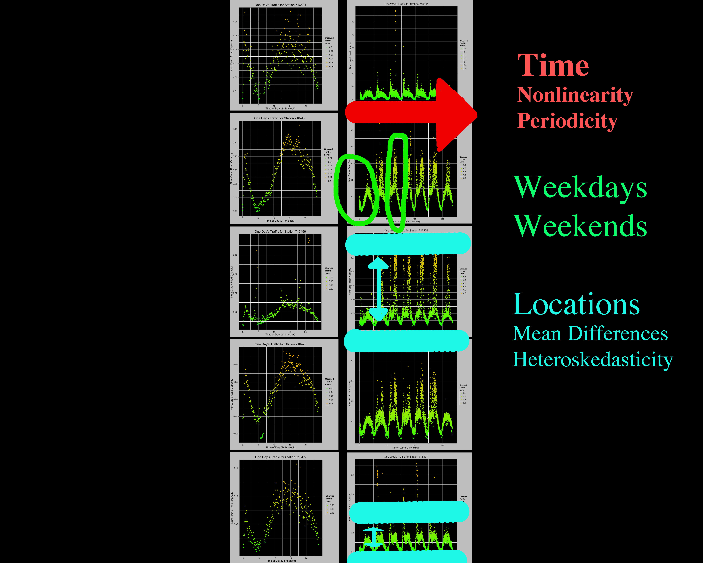
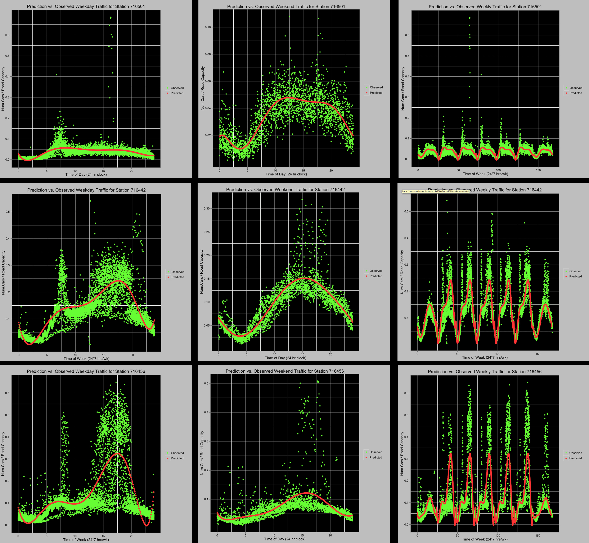

Results and Discussion
Station Data over a Week

Key Data Insights:
- Time seems to be a good predictor of daily and weekly traffic.
- The relationship between time and traffic is highly nonlinear & periodic in days and
weeks.
- Weekend days have obviously different traffic patterns than weekdays.
- While stations appear to follow similar patterns over time, some experience much more traffic, more variance in traffic, or both compared to others.
Model Fitting: Observed Traffic vs Predicted Traffic
Using 7th order
polynomial GLM regression on time of day + all dummy interactions for weekday/weekend and
location:
Leftmost plots are predicted traffic vs. all weekday traffic
Center plots are predicted traffic vs. all weekend traffic
Rightmost plots are predicted traffic vs. all weeks of traffic

After we have generated our regressions, we have verified the equation (red line) by plotting against the observed data. We see that the equation fits the overall shape of the observed traffic points.
Our script that downloads real-time data also appends new observations to the existing files that are used in regression analysis. ***BENEFIT OF THIS: ADAM WRITE HERE***
Reflections
***WRITE THIS PART -- LESSONS LEARNED FROM PROJECT, WHAT WAS COOL, WHAT WAS NOT---
This project was a challenging, yet rewarding exercise in applying the parallel computational techniques we have learned in order to analyze "big data".
Frustrating aspects: this is an immature field, and so not well documented and required much thought and dedication (and a fair bit of luck). Yet this is also why it is exciting --- leading edge techniques, this stuff hasn't been done before for social science, we have innovated new tools, and hope to expand the field.